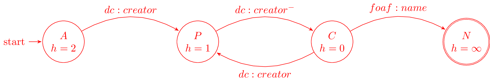

Evaluating Navigational RDF Queries over Web
Baier, Daroch, Reutter and Vrgoc
CIWS & PUC Chile
Created: 2017-07-05 Wed 23:23
Introduction
Motivation
Sharing across databases
- Information on relational databases is hard to share
- Different format, schema and access policies
- Sharing problems cause data to become outdated
- A different approach is needed
A Web-like approach
The Web provides linked documents with human readable information
- Documents are linked
- Real owners can update the data
- Documents can be navigated across different servers
- It's distributed
- Can scale-out
Linked Data
One Database to rule them all
LD movement proposes a way to model data that can be linked and distributed
- A Graph made of IRIs and strings
- IRIs link data instead of copying it
- Uses IRIs as data identifiers
- Uses IRIs as relation identifiers
- And suggests collection of relations to use
Resource Description Framework
Defines the layout of the data
- An RDF triple is a tuple \((S, P, O)\)
- \(Subject\) is an IRI or a string
- \(Predicate\) is an IRI representing a relation
- \(Object\) is an IRI or a string
- It's essentially the unit of information
- Data is meant to be retrieved from the internet
- Open-world assumption must be used
An example
prefix dblpAuthor: <http://dblp.l3s.de/d2r/resource/authors/>
prefix dblpConf: <http://dblp.l3s.de/d2r/resource/publications/conf/>
dblpConf:sigmod/Stonebraker90 dc:creator dblpAuthor:Michael_Stonebraker
dblpConf:sigmod/Stonebraker90 rdfs:label "The Postgres DBMS."
dblpAuthor:Michael_Stonebraker foaf:name "Michael Stonebraker"
Why RDF?
- Different databases can be trivially joined
- No schema compatibility problems or conversions.
- Database can be sharded
Querying Linked Data
A data model is not enough
Databases must be queried to be useful
SPARQL
A SQL-like language for querying and modifying graph databases
- A query language
- Queries are RDF graphs with variables and restrictions
- Answers are computed by pattern matching
- SPARQL servers provide
- An SPARQL endpoint to consume or update RDF data
- A store for the data
Problems with SPARQL
- Querying multiple servers is hard
- Query federation allows specifying multiple servers
- Lacks discoverability
- Queries are harder to write
- Query federation allows specifying multiple servers
- Computation is done completely server-side
- Exposing SPARQL endpoints is troublesome
- Queries can be computationally hard
- Implementations often get OoM errors or timeouts (trashing/crashes)
Navigational Queries
Navigation
Searching data the way you browse for it
- You don't know which server has the answer
- From a starting point you follow links onto your answers
- Servers just offer data
- You do the computation and ask for data on the fly
- You don't know whether you see all the data
- Open-world semantics are intrinsic
- You probably can't have all of it
Property Paths
Property paths allow expressing composed relations using regular expressions over IRIs and their inverses
- Expressive and easy to compute
- Regular expressions are already widely studied
- SPARQL supports them too, but
- Lacks the discoverability that PP allow
- Efficient implementation is tricky, many queries are troublesome
- Even the standard needed corrections to avoid blow-ups
Property Path examples
Automata
Definition
Property Path Automata
- An automaton over alphabet of IRIs and their inverses
- Matching requires an initial IRI to pair with the initial State
- Computing matches needs dereferencing IRIs
- Computations looks like resolving a search problem
- Can be enhanced with filtering on States and Transitions
Example
Query evaluation
Automaton evaluation problem
- Given an RDF graph, an Automaton for it, and a starting RDF node,
- Find 'all' the matching paths
Evaluating an Automaton query
Matching as a Search Problem
Matching resembles a search problem
- The problem is a Search Problem over \(RDFGraph \times States\)
- But not only a shortest-path is needed
- It's easy to tweak the search to get all shortest paths
Evaluating using search
- From the search community 3 pathfinding algorithms are well known
- \(A^*\), BFS (Dijkstra) and DFS
- The recursive approach that was previously used resembles DFS
- BFS and DFS were already tried
- Using \(A^*\) requires additional information about the search space
- We found an easy way to get it
Heuristic
Distances to accepting states are lower bounds for finding answers

Implementation
- Search nodes are \((RDFNode, State)\) pairs
- We used a priority queue and an index for the existing search nodes
- Typical \(A^*\) and BFS structures
- Needed for deduplication on DFS
- We altered the expected cost (priority) to get different behaviours
- \(A^*\) uses \(f=g+h\), node cost + estimated cost left
- BFS uses \(f=g\)
- DFS uses \(f=h\)
Optimizations used
- Parallel expansions
- Instead of expand any top f-value node, try to expand all of them
- Early goal declaration
- Declare goals when before adding nodes to the queue
- Avoid adding dead-end nodes
- Implemented by modifying the heuristic
- Precomputed heuristic
Heuristic for using Early Expansions
Expanding a \((node, state)\) discovers nodes paired with successor states

Experimental evaluation
Experiment setup
- 11 queries using
- DBLP
- DBpedia
- Linked Movie Database
- YAGO
- Ran on i5-4670 quad-core with 4 GiB RAM
- Python multi-process implementation
- Search bounds
- Stop if \(1000\) answers are found
- Stop if \(100000\) triples are retrieved
- Stop after \(10\) minutes searching
Sample query - Coauthor names
Sample query - Bacon Number
Results summary
Over the 11 queries we counted on how many queries the algorithms performed the best
| Measure | A* | BFS | DFS |
|---|---|---|---|
| Requests / Answers | 11 | 3 | 4 |
| Time / Answers | 11 | 3 | 4 |
Results summary
Requests vs answers is the most fair measure as dereference times vary. We noted that parallelism helps all algorithm
| Parallel requests allowed | A* | BFS | DFS |
|---|---|---|---|
| 1 | 11 | 3 | 4 |
| 10 | 7 | 3 | 3 |
| 20 | 6 | 3 | 3 |
| 40 | 6 | 4 | 5 |
Experiment discussion
- Little CPU usage, under 5%
- Memory used is linear on the dereferenced data
- Time dominated by dereference time
- Parallel dereference gives free speedup
- Gains bounded by data and throughput
- Parallel dereference gives free speedup
- Optimizing dereference should yield to vast improvements
- Parallel and reusable connections
- Compression
- Download only what is needed
Questions
Extra
Heuristic optimization demo
A weird behaviour
Notice what happens when you just discovered an IRI that is a goal for a new f-value level
- You can declare that IRI goal when you expand it's parent
- No need to expand that IRI yet
- A weird ordering appears
- Siblings of the goal's parent might lead to similar solutions (same \(f\))
- But tie breaking prefers greater \(g\), thus \(h=0\) is preferred
Paths prove relation
Computing all of them seems pointless
Looking for all patterns that match can be too much
- A toy database:
- Alphabet and a less than relation
- Which patterns match \(a \cdot lessThan^* \cdot X\)?
- a < z
- a < b < c < … < z
- There's one match per subset of \(\{b..y\}\)
- Less or equal leads to infinite matches!
- Is the data flawed?
- On the internet you won't control it. You must avoid this
TODO Evaluation - No parallelism
TODO Experiments
Available on the repo
TODO Query 1
TODO Evaluation - Parallelism effect
TODO Query 1 - P40
Thanks
Config
Theme setup
Black (default) -
White -
League -
Sky -
Beige -
Simple
Serif -
Blood -
Night -
Moon -
Solarized